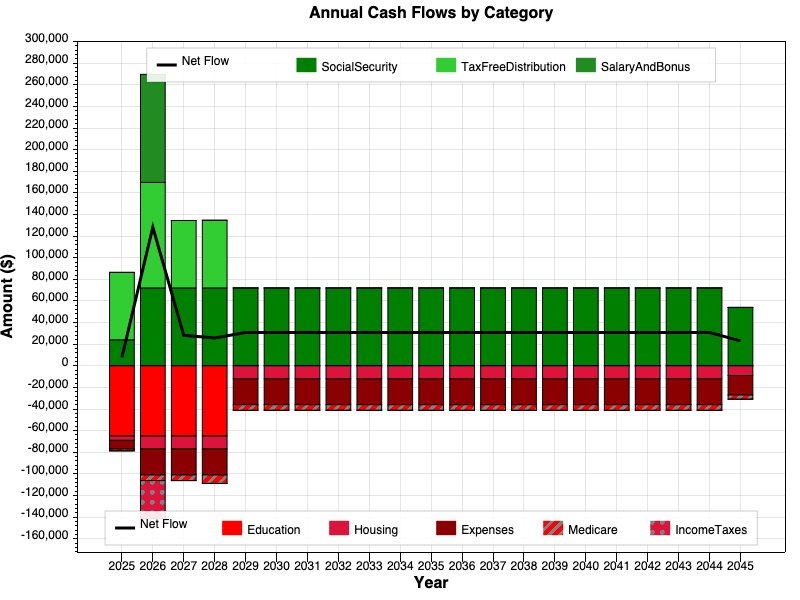
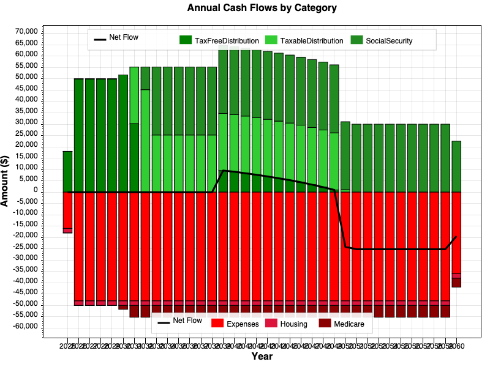

The Annual Cash Flows chart gives you a year-by-year picture of all the money coming in and going out during your retirement plan. It answers the question: "Where is my money coming from, and where is it going?"
The chart is a stacked bar chart with two halves:
The X-axis shows Year and the Y-axis shows Amount ($).
Two legends appear on the chart:
| Legend Position | What It Shows |
|---|---|
| Upper area (green items) | Income categories — Social Security, account distributions, salary, capital gains, etc. |
| Lower area (red items) | Expense categories — housing, general expenses, Medicare, education, taxes, etc. |
Each category gets its own color shade or hatch pattern so you can distinguish them within the stacked bars.
| Category | What It Represents |
|---|---|
| SocialSecurity | Social Security benefits for you and/or your spouse |
| TaxFreeDistribution | Withdrawals from tax-exempt accounts (e.g., Roth IRA) |
| TaxableDistribution | Withdrawals from tax-deferred accounts (e.g., traditional IRA, 401k) |
| SalaryAndBonus | Employment income before retirement |
| OtherIncome | Pensions, rental income, or other specified income |
| CapitalGains | Gains from taxable investment accounts |
| Category | What It Represents |
|---|---|
| Expenses | General living expenses (groceries, utilities, travel, etc.) |
| Housing | Mortgage, condo fees, property tax, maintenance |
| Medicare | Medicare premiums including Part B, Part D, and IRMAA surcharges |
| IncomeTaxes | Federal income taxes |
| Education | College tuition or other educational expenses |
| Insurance | Insurance premiums |
| Medical | Out-of-pocket medical expenses beyond Medicare |
| CharitableContribution | Charitable donations |

A scenario showing someone retiring in 2029, with salary income tapering off and retirement distributions taking over.

A scenario covering roughly 35 years of retirement, with income from distributions and Social Security.
Look at the black net flow line. If it stays above zero for most years, your plan is generating more income than it spends. If it dips below zero, those are years where you'll need to draw down savings to cover the gap.
The chart clearly shows when major income or expense changes happen: retirement date, Social Security start, mortgage payoff, education expenses ending, Medicare kicking in, or RMDs beginning.
The stacked green bars show how your income composition changes over time. Early retirement might rely heavily on account distributions, while later years lean more on Social Security. You can see the balance at a glance.
If the red bars grow taller over time while green bars shrink, your plan may face sustainability challenges. Look at which expense categories are growing — is it Medicare premiums increasing with age? Housing costs? General expenses?
Try changing your inputs (retirement age, spending levels, Social Security start date) and compare how the chart changes. The shape of the bars and the net flow line will show you the impact immediately.